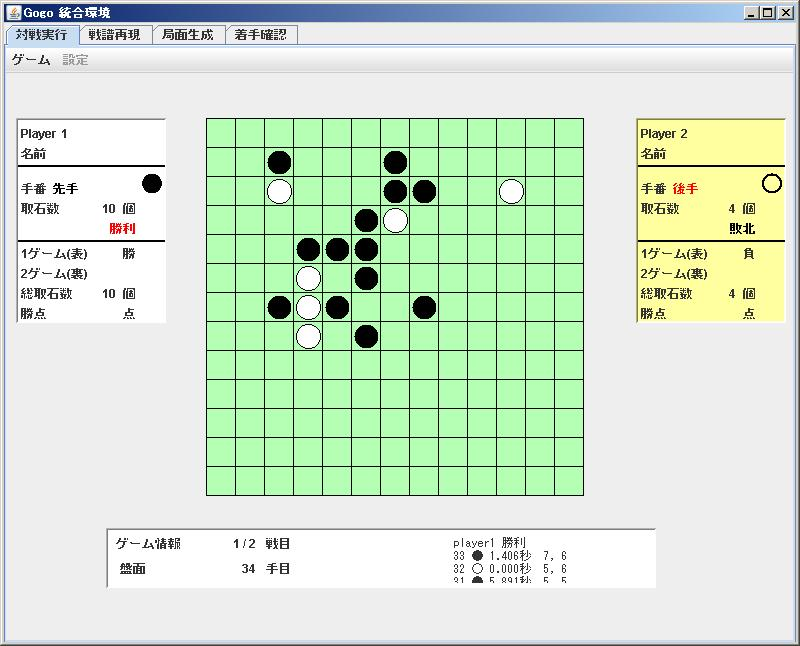
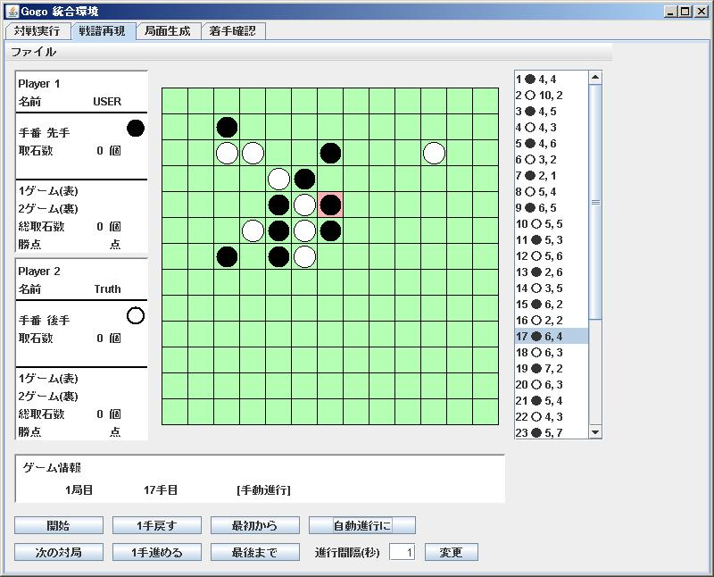
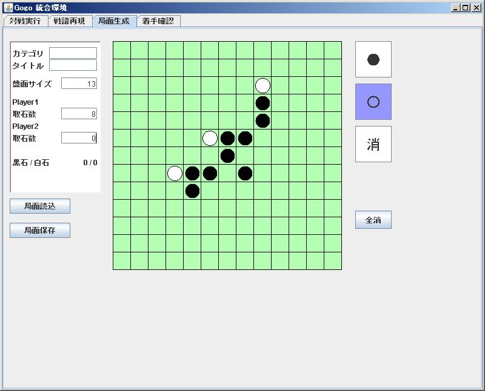

WinG-LAのチュートリアル
1. 開発環境WinG-LAのダウンロード
- \\stfile.eng.kagawa-u.ac.jp\report\tominaga\_Tutor\InfoExpr2 から開発環境をダウンロードする。
- 開発環境は、C:\App\ 下に設置する。
2. 対戦実行モジュールの実行

- / の _GogoStart.bat 実行し、開発環境WinG-LAを起動する。
- 対戦実行モジュールを利用し、ユーザ同士で対戦を実行する。
- 対戦実行モジュールのタブを選択し、メニュー → ゲーム → スタート で対戦を開始する。
- 2戦目を開始するには、1戦目と同様に、メニュー → ゲーム → 2回戦 を選択する。
- 対戦結果をユーザ戦譜として data/record/user/ 下に、Record_1 という名前で保存する。拡張子の指定は必要ない。
- 対戦結果を保存するには、メニュー → ゲーム → 戦譜保存 を選択する。
3. 戦譜再現モジュールの実行

- 戦譜再現モジュールのタブを開き、戦譜再現モジュールを利用して、対戦を再現する。
- 先ほど保存した戦譜を読込む。メニュー → ファイル → 戦譜読込 を選択する。
- 戦譜を再現する。ウィンドウ下部にある開始ボタンを押す。(手動と自動)
- 適当な局面をユーザ局面として data/state/user/ 下に、State_0 という名前で保存する。拡張子の指定は必要ない。
- 局面を保存するには、メニュー → ファイル → 局面保存 を選択する。
4. 局面生成モジュールの実行

- 局面生成モジュールのタブを開き、局面生成モジュールを利用して、局面を編集する。
- 先ほど保存した局面の読込む。ウィンドウ左部にある局面読込ボタンを押す。
- 局面を編集する。(石の配置、取石の設定)
- 適当な局面をユーザ局面として data/state/user/ 下に、State_1 という名前で保存。拡張子の指定は必要ない。
6. JDK環境の確認(1.7)
7. サンプル戦略を用いるためのシステムのリビルド
- サンプル戦略を用いるためには、/ の SetPlayer.java の SetPlayer() 内を編集する。
- 編集した SetPlayer.java をコンパイルするには、/ の _GogoBuild.bat を実行する。
- / に SetPlayer.class が生成され、リビルドは完了する。
例： ユーザ 対 コンピュータ
public SetPlayer() {
//-- プレイヤ１の指定
player1 = new GogoPlayer( null, +1, player1.PERS ); // ユーザ
//-- プレイヤ２の指定
player2 = new GogoPlayer( null, -1, player2.COMP ); // コンピュータ
//---- 戦略バイナリの指定
player2.set_comp(new data.strategy.sample.Dummy_00(player2));
}
8. サンプル戦略と初期局面を用いた対戦実行モジュールの実行
- メニュー → 設定 → 初期局面読込 を選択し、先ほど保存した局面を読込む。
- ユーザ 対 コンピュータで対戦を実行する。
- 対戦結果をユーザ戦譜として data/record/user/ 下に、Record_2 という名前で保存。拡張子の指定は必要ない。
9. ユーザ戦略の試作
- ユーザ戦略を用いる場合も、7. と同様の作業手順である。
- 戦略バイナリの指定部で、任意のユーザ戦略のパスを設定する。
例： ユーザ 対 コンピュータ
public SetPlayer() {
//-- プレイヤ１の指定
player1 = new GogoPlayer( null, +1, player1.PERS ); // ユーザ
//-- プレイヤ２の指定
player2 = new GogoPlayer( null, -1, player2.COMP ); // コンピュータ
//---- 戦略バイナリの指定
player2.set_comp(new data.strategy.user.s11t200.User_s11t200_00(player2));
}
10. ユーザ戦略を用いた対戦実行モジュールの実行